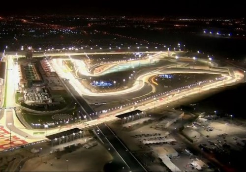
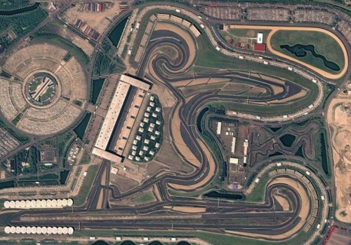
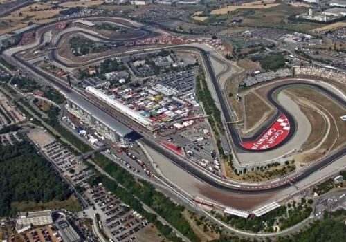
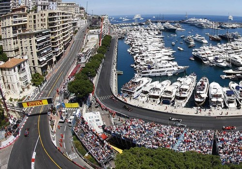
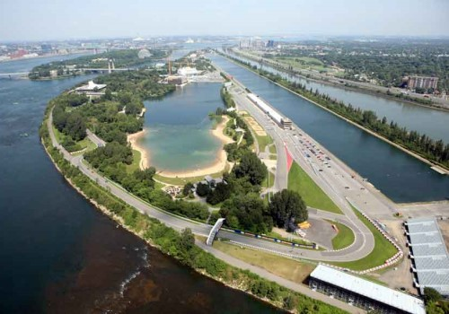
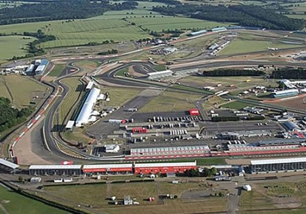
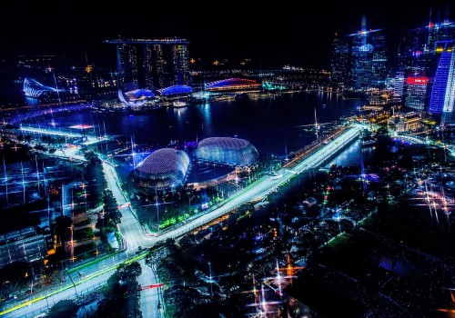
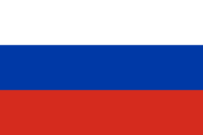
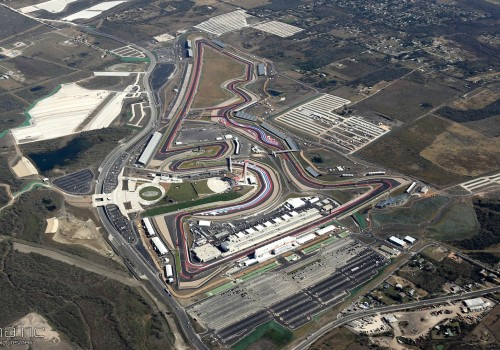

Melbourne Grand Prix Circuit
- Hely: Ausztrália, Melbourne
- Épült: 1996
- Hossz: 5,3 km.
- Kanyarok: 16
- Pályacsúcs: 1:20.486, Lewis Hamilton
- Legtöbb győzelem: Michael Schumacher (4)
Bahrain International Circuit
- Hely: Bahrein, Szahír
- Épült: 2004
- Hossz: 6,3 km.
- Kanyarok: 15
- Pályacsúcs: 1:29.493, Lewis Hamilton
- Legtöbb győzelem: Sebastian Vettel (4)

Shanghai International Circuit
- Hely: Kína, Sanghaj
- Épült: 2004
- Hossz: 5,4 km.
- Kanyarok: 16
- Pályacsúcs: 1:32.238, Michael Schumacher
- Legtöbb győzelem: Lewis Hamilton (6)

Baku City Circuit
- Hely: Azerbajdzsán, Baku
- Épült: 2016
- Hossz: 6 km.
- Kanyarok: 20
- Pályacsúcs: 1:43.009, Charles Leclerc
- Legtöbb győzelem: Daniel Ricciardo (1), Lewis Hamilton (1), Valtteri Bottas (1)
Circuit de Catalunya
- Hely:
 Spanyolország, Barcelona
Spanyolország, Barcelona - Épült: 1991
- Hossz: 4,6 km.
- Kanyarok: 16
- Pályacsúcs: 1:20.981, Mark Webber
- Legtöbb győzelem: Michael Schumacher (6)

Circuit de Monaco
- Hely: Monaco, Monte-Carlo
- Épült: 1929
- Hossz: 3,3 km.
- Kanyarok: 14
- Pályacsúcs: 1:12.178, Kimi Räikkönen
- Legtöbb győzelem: Ayrton Senna (6)

Circuit Gilles Villeneuve
- Hely:
 Kanada, Montréal
Kanada, Montréal - Épült: 1978
- Hossz: 4,3 km.
- Kanyarok: 15
- Pályacsúcs: 1.13.622, Rubens Barrichello
- Legtöbb győzelem: Michael Schumacher (6)

Circuit Paul Ricard
- Hely:
 Franciaország, Le Castellet
Franciaország, Le Castellet - Épült: 1969
- Hossz: 5,8 km.
- Kanyarok: 18
- Pályacsúcs: 1:39.914, Keke Rosberg
- Legtöbb győzelem: Michael Schumacher (8)

Red Bull Ring
- Hely:
 Ausztria, Spielberg
Ausztria, Spielberg - Épült: 1969
- Hossz: 4,3 km.
- Kanyarok: 10
- Pályacsúcs: 1:07.411, Lewis Hamilton
- Legtöbb győzelem: Nico Rosberg (2)

Circuit Silverstone
- Hely:
 Egyesült Királyság, Northamptonshire
Egyesült Királyság, Northamptonshire - Épült: 1942
- Hossz: 5,8 km.
- Kanyarok: 18
- Pályacsúcs: 1:26.6, Lewis Hamilton
- Legtöbb győzelem: Lewis Hamilton (5), Alain Prost (5)

Hockenheimring
- Hely:
 Németország, Hockenheim
Németország, Hockenheim - Épült: 1932
- Hossz: 4,5 km.
- Kanyarok: 13
- Pályacsúcs: 1:13.780, Kimi Räikkönen
- Legtöbb győzelem: Lewis Hamilton (4), Michael Schumacher (4)
Hungaroring
- Hely: Magyarország, Mogyoród
- Épült: 1986
- Hossz: 4,3 km.
- Kanyarok: 14
- Pályacsúcs: 1:16.147, Ayrton Senna
- Legtöbb győzelem: Lewis Hamilton (6)

Circuit de Spa-Francorchamps
- Hely: Belgium, Spa
- Épült: 1920
- Hossz: 7 km.
- Kanyarok: 21
- Pályacsúcs: 1:45.070, Kimi Räikkönen
- Legtöbb győzelem: Michael Schumacher (6)
Autodromo Nazionale Monza
- Hely:
 Olaszország, Monza
Olaszország, Monza - Épült: 1922
- Hossz: 5,8 km.
- Kanyarok: 10
- Pályacsúcs: 1:19.525, Rubens Barrichello
- Legtöbb győzelem: Michael Schumacher (5), Lewis Hamilton (5)
Singapore Street Circuit
- Hely: Szingapúr, Szingapúr
- Épült: 2008
- Hossz: 5,1 km.
- Kanyarok: 24
- Pályacsúcs: 1:45.599, Kimi Räikkönen
- Legtöbb győzelem: Sebastian Vettel (4), Lewis Hamilton (4)

Sochi Autodrom
- Hely:  Oroszország, Sochi
- Épült: 2014
- Hossz: 5,8 km.
- Kanyarok: 18
- Pályacsúcs: 1:35.861, Valtteri Bottas
- Legtöbb győzelem: Lewis Hamilton (3)

Suzuka Circuit
- Hely: Japán, Szuzuka
- Épült: 1962
- Hossz: 5,8 km.
- Kanyarok: 17
- Pályacsúcs: 1:31.540, Kimi Räikkönen
- Legtöbb győzelem: Michael Schumacher (6)

Autódromo Hermanos Rodríguez
- Hely: Mexikó, Mexikóváros
- Épült: 1962
- Hossz: 4,4 km.
- Kanyarok: 17
- Pályacsúcs: 1:14.759, Daniel Ricciardo
- Legtöbb győzelem: Jim Clark (2), Nigel Mansell (2), Alain Prost (2), Max Verstappen (2)
Circuit of the Americas
- Hely:
 USA, Austin
USA, Austin - Épült: 2012
- Hossz: 5,5 km.
- Kanyarok: 20
- Pályacsúcs: 1:37.392, Lewis Hamilton
- Legtöbb győzelem: Lewis Hamilton (6)

Autódromo José Carlos Pace
- Hely:
 Brazília, São Paulo
Brazília, São Paulo - Épült: 1942
- Hossz: 4,3 km.
- Kanyarok: 15
- Pályacsúcs: 1:09.822, Rubens Barrichello
- Legtöbb győzelem: Alain Prost (6)
Yas Marina Circuit
- Hely: Egyesült Arab Emírségek, Abu-Dzabi
- Épült: 2009
- Hossz: 5,5 km.
- Kanyarok: 15
- Pályacsúcs: 1:38.434, Lewis Hamilton
- Legtöbb győzelem: Lewis Hamilton (4)